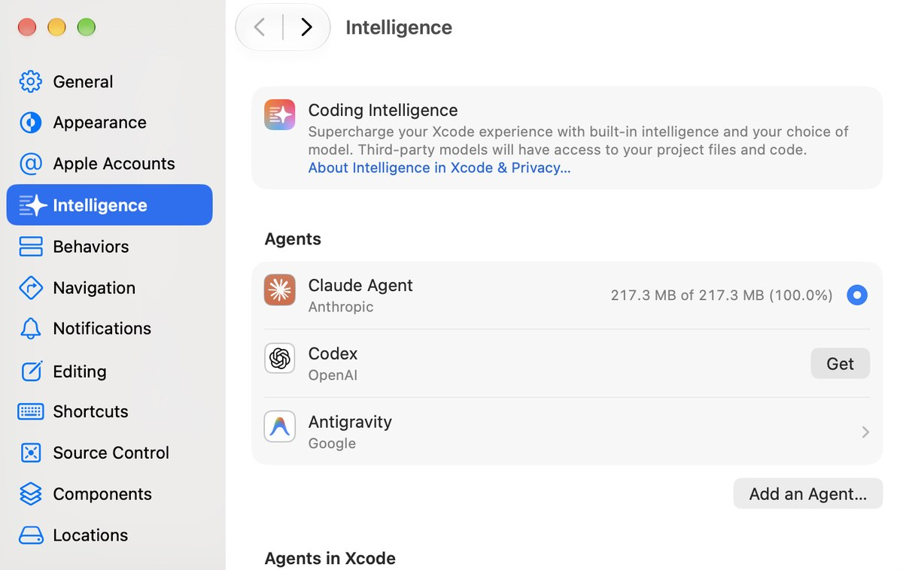

Xcode
Xcode is Apple’s free app for making apps for iPhone, iPad and Mac. Xcode 27 has AI built in, and you bring your own: sign in with the Claude and ChatGPT subscriptions you already have, and both work inside any project. This guide shows how, in four short steps.
Best for
Using the AI you already pay for where you make apps. One sign-in each, then every project can use it.
Start here
Xcode 27, free from the Mac App Store. It needs a Mac with Apple silicon (M1 or later) on macOS 26.6 or later.
You need a Claude plan, a ChatGPT account, or both.
Hong Kong is not on Anthropic’s or OpenAI’s list of supported regions, and Apple says these features are available “where available”. Check with HKIS leadership and IT before you rely on them. If your Mac is managed by the school and you don’t see Claude or ChatGPT in Xcode’s settings, ask IT: a device-management setting can switch the coding assistant off.
This guide is a draft. Screenshots marked “to come” are still to be taken, and anything tagged TBC still needs checking.
Exercise 1: Open the Intelligence settings

- Open Xcode from your Applications folder.
- Choose Xcode, then Settings… (or press ⌘ and the comma key).
- Choose Intelligence in the sidebar.
At the top, a Coding Intelligence banner reminds you that third-party models can see your project files and code. Below it, Agents are AI helpers that can plan, write, build and test code for you: here, Claude Agent, Codex and Antigravity. Further down, Chat holds AI models you talk to, and Model Context Protocol is for adding extra tools, which you can leave alone.
Exercise 2: Connect ChatGPT
Screenshot to come
The Chat section, with the Turn On button in the ChatGPT in Xcode row marked 4.
- Under Chat, click Turn On in the ChatGPT in Xcode row.
- Click Next, then Turn On ChatGPT. That is enough to start, and it works without an account, with usage limits.
- To use your own ChatGPT account, click Sign In in the ChatGPT row, then Sign In again. Finish in the browser window that opens. A paid account has higher limits.
Exercise 3: Connect Claude
Screenshot to come
The Agents section, with Get next to Claude Agent marked 7, and then the Claude Agent settings with the More button (…) in the Account row marked 8.
- Under Agents, click Get next to Claude Agent. In the box that opens, click Install. Xcode downloads it (about 217 MB) and shows the progress on the row.
- When the download has finished, click the Claude Agent row to open its settings. In the Account row, which says Not Signed In, click the … button, and choose the option to log in with your Claude account. A browser window opens to finish. TBC
Claude in Xcode needs a Claude Pro or Max plan, or a premium Team or Enterprise seat. The Free plan doesn’t work. What you use in Xcode counts against the same limits as your chats with Claude.
You can also talk to Claude as a chat model: under Chat, click Claude Sonnet & Opus, then click Sign In in the Claude row.
Two other agents are in the Agents list: Codex from OpenAI and Antigravity from Google. They are added the same way, with Get, and you don’t need them today. Antigravity signs in with a Google AI plan, a Gemini Enterprise account or a Gemini API key. Xcode warns that on a Google AI plan, prompts and responses may be reviewed to improve Google AI. Whether a school Google account works is not stated. TBC
Exercise 4: Check that it works
Screenshot to come
The coding assistant open beside a project, with New Conversation and the choice of agent marked 10, and a short reply to the test prompt.
- Open any project. To make a practice one, choose File, then New, then Project…, and choose App.
- Open the coding assistant: press ⌘0, or click the Coding Assistant button. Click New Conversation, and choose Claude Agent or ChatGPT.
- Send the message below.
Hello! Which AI model am I talking to, and what could you help me do in this project?
Not yet tested. TBC
Once you connect an AI, it may read your project files and other information when it answers. To see what is shared, click About Intelligence in Xcode & Privacy… in the Intelligence settings. Keep students’ names and personal information out of your projects.
Push it further
Now ask your AI to build something. Change one thing at a time, and run the app after each change.
Build a SwiftUI screen for a Grade 7 student who loses their place in a multi-step maths problem. Show the current step first, then let them tick it off. Keep the language at Grade 5.
Not yet tested. TBC
Explain what each part of the code does, in plain English.
- Run it. Choose an iPad from the run destination menu in the toolbar, then click Run (⌘R). Your app opens in an iPad simulator, in the Device Hub app.
- Your own iPad. Sign in under Xcode, Settings…, Apple Accounts, connect the iPad and tap Trust, and turn on Developer Mode on the iPad. With a free Apple Account the app stops working after 7 days, and you run it again from Xcode.
- Students. TestFlight can’t reach students’ school Apple Accounts. To put an app on HKIS iPads, make it a private app through Apple School Manager, or use the App Store.
Videos
Each video loads only when you press play. They are from independent creators, not from Apple.
Five minutes on connecting the AI models and agents Xcode 27 supports, from Anthropic, Google and OpenAI.
A first iPhone app built with Xcode 27’s AI, covering planning, skills, MCP and the new Device Hub app.